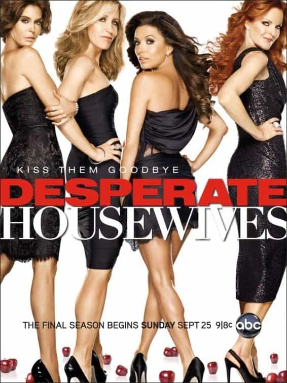

“The Bewitchin’ Pool” was the final episode of the Twilight Zone aired. It is an episode that causes much consternation of those who view it. Do note, limited funding hindered the production of the episode, as it shows in the poor production and editing of the episode. However, it is a fascinating episode that highlights some serious issues in America that began to take off when it was aired.
The episode begins with a rich family of a successful father, a bored wife & two young children – a daughter & son. It is clear from the outset the mother is a pure histrionic female who takes to new identities as she feels the need. The father is a cold, narcissistic man. Both are dismissive of the children and are very cruel & self-centered in dealing with them.
After yet another vitriolic clash between the two parents, the children are approached- by the pool – by a young boy swimming around claiming there is a better life for them if they just follow him to the other side. Eventually the two kids agree, jump into the pool and come out into a different world. It is a fantasy world of happy children with a compassionate, loving maternal grandmother who unconditionally loves them all.
Eventually, they hear the voices of their parents and are worried their parents are missing them & concerned for their safety. They go back to reality and, once again, realize their parents are still all about themselves and their victim complexes. They desperately seek out the other world and eventually make it back, ignoring the cries of their self-absorbed parents – seemingly staying in this idyllic world.
In “The Bewitchin’ Pool” the two kids sought out an alternate reality to their sufferings at the hands of terribly cruel parents. Like any other kid, they seek out a world where a parental figure gives them unconditional love and allows them the space to be a kid. This is a typical fantasy of a child whose life has been supremely deficient from a parenting standpoint. They dream of life in which they don’t have to negotiate complicated relationships between two parents fraught with tension & anger. They desire a life where they get the unconditional love that will very much help them become well-adjusted adults. The twist, here, is that world isn’t just a fantasy but a reality if they can let go of the relationship with their parents.
This letting go has ruffled some feathers of those reviewing the episode for many reasons, but consider the relationship a child will have with parents like these. The views of the child are going to be purely black & white – either they love their parents with no qualifications or they hate their parents to their very core. This supreme vacillation is emblematic of an unhealthy relationship. In his book “No More Mister Nice Guy,” Dr. Robert Glover notes this in his sessions with husbands talking about their wives. One second they are praising their wives to the Heavens then muttering, “Fucking bitch.”
Back on point, towards the end when the parents give them the “good news” they are divorcing the daughter says they will be good now & she understands that their misbehavior is the cause of the divorce. This is a stereotypical response of a child upon learning their parents are getting divorced. Say what you will about divorce, but no matter how well intentioned by the parents, a child will always blame themselves for the divorce. The parents laugh and it represents the kids are no more than window-dressing. Sure, the kid’s existence strained relations between the two, but didn’t create any new tensions than those that were already there.
As this episode was aired in the middle of the 1960’s, with the Sexual Revolution in full sway a cascade of divorces would visit the country in the next decade. This episode shows the early recognition of the divorces that are to come, but is conflicted as it provides evidence for the utility of divorce to cure unhappy marriages, but also recognizes the terrible psychological pressure poor parenting and divorce has on a child.
First, the culture of divorce is rooted in narcissism & denial of psychological issues.
Divorce most assuredly has its deepest foundations in hypergamy. However, it is far worsened by our narcissistic society. Note the first benefit of divorce – happiness for both parents. In “The Bewitchin’ Pool” both parents are presented as highly dissatisfied with the relationship. The mother overestimates her potential – a quasi-feminist – and a dismissive male who cares only about his own success. This is an unusual relationship, as most divorces are a female leaving a male who loves them.
This episode highlights the delusions around how divorce goes down. It presents two equally dissatisfied parties that would prefer divorce over working the relationship out. Further, it highlights the delusions around how personal psychology. Rarely is somebody simply a product of an unhappy relationship. That assumes issues in a marriage stem merely from being matched with the wrong person. That is incredibly naïve & reeks of female delusions about how relationships work.
Most times, personal psychological issues get magnified in a given relationship – it is up to every person to handle their responses. It is one thing to admit your partner is making a certain trait of yours more obvious; however, it is up to you to decide whether to express it or not. Chalk it up to our society’s desire to have everybody express their emotions – it is good that everybody be aware of what they are feeling , however, having them express it isn’t always a good idea. It is best to have people be honest with themselves above all else.

Second, consider the female imperative represented by divorce culture. Women need to keep up appearances in the event of them choosing to divorce. They need social support networks to help them, they need court systems to ensure fiscal solvency and they need forces in the media assuring anybody who would judge them that the divorcing woman is making the right choice. Children, husbands, etc. are secondary or less concerns when it comes to their personal happiness. Always remember that their happiness is predicated on social approval of their decisions.
Society does a bang-up of shoring up female concerns around divorce. Females still complain that they are being judged for divorcing their husbands and separating their children from their father, but that noise is coming from other women. Kill all the men tomorrow and virtually 100% of female concerns will still exist as their problems involve other women. Still, society does its utmost to ensure women are adequately compensated in divorce, provided and plenty of governmental help for psychological issues. For the mother, not the children.
However, the most important part of this episode are the kids themselves. Their parents divorcing doesn’t cure either parent of their personal issues nor guarantee any sort of happiness or better treatment for the kids. Superficial and female-centric salves such as divorce are defenses against individuals facing their own personal issues, either by blaming the other parent or taking it out on their captive audience of children.
I can personally attest to this situation. My parents had a horrid relationship in which I would spend much time in my room alone, playing with toys, reading & writing. My imagination took me places I could never go in real life. However, the call of your parents will always be there. You can only immerse yourself in your action figures or Legos for so long before the spell is broken by the barking of your mother. Part of the reaction to this episode is people who have no idea what it is like to be in this situation. It can be very tiring talking about this episode with people who constantly bang on about how creepy the grandmother figure is & how they would never leave their parents, no matter how cruel. I completely understand the supreme reticence about leaving your parents, but this episode did & does speak to me about wanting to leave horrible parents.
I understand the wandering of any kid’s imagination in response to their deficient upbringing – their dependency necessitates understanding their parent’s issues insofar as it relates to their ability to survive. The problem is that everybody will at least, in theory, have the ability to support themselves independently when they become adults. The issue is that those complexes that carried a child through to adulthood are no longer necessary because they are no longer dependent on that parent.
In the end, “The Bewitchin’ Pool” first aired in the summer of 1964, in the middle of the emerging Sexual Revolution. The episode focused on the children who would be the primary victims of the slowly emerging divorce culture. It showed some kids who were subject to terrible parenting & needed to have an escape from that. However, the episode highlighted the nascent optimism that the Sexual Revolution embodied as seen through divorce.
It has been said that this episode was a horrible episode to end the Twilight Zone series on because there was no twist in the ending.
There was a twist in the ending, alright.
Those two kids came into happiness when most American children won’t with today’s parenting
{kind=link}
{kind=link}
{kind=link}
{kind=link}